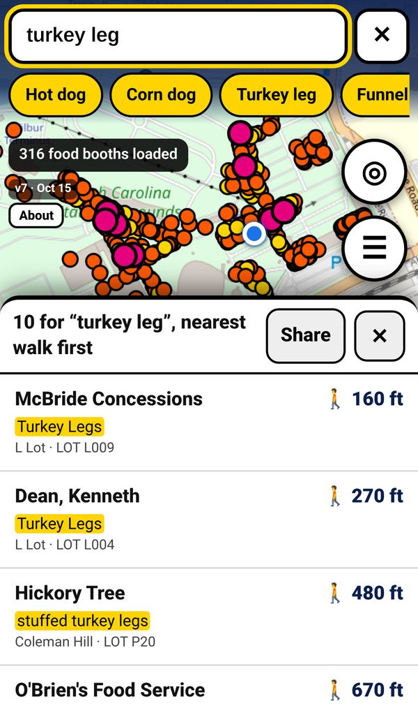
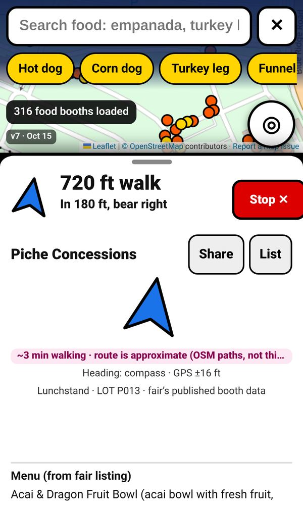
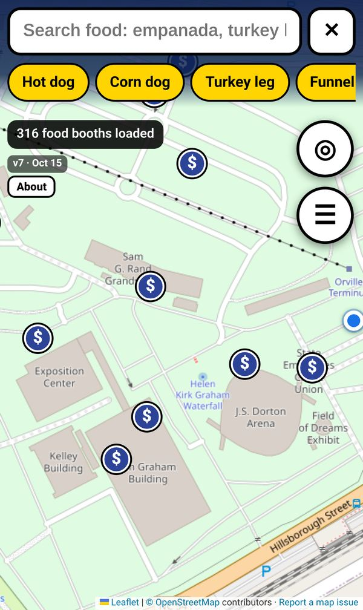

What it does

Search any food
Search by what’s on the menu, not just by vendor name. “Turkey leg”, “funnel cake” or “lemonade” finds every booth whose fair listing mentions it, with close matches and common spellings covered.

Live walking directions
Tap a booth and follow the arrow. It turns with your phone’s compass, a route is drawn along the fairground paths, and hints like “In 180 ft, bear right” update as you walk. If you wander off, it reroutes.

Find an ATM
Turn on the ATM layer to see cash machines around the grounds, taken from the fair’s published grounds map. Their spots are approximate, so look for signs as you get close.
Share a booth link
Found the good corn dogs? Tap Share to send a link. Your friend opens it and gets walking directions to that booth from wherever they are.
How to use it
- Allow locationWhen your browser asks, tap Allow so the map can show where you are. On iPhone, if you tapped Don’t Allow, go to Settings › Privacy & Security › Location Services › Safari Websites.
- Tap “Enable compass”Start guiding to a booth and tap the 🧭 button so the arrow turns with your phone. Without it, the arrow points north-up until you start walking.
- Add to Home ScreeniPhone (Safari): tap Share, then Add to Home Screen. Android (Chrome): tap the ⋮ menu, then Add to Home screen or Install app. It opens full screen like an app.